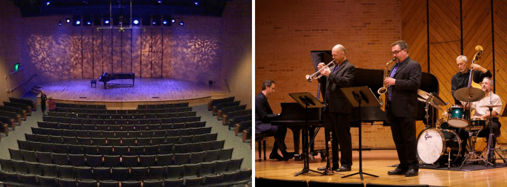
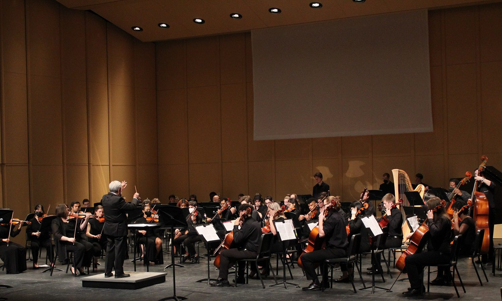
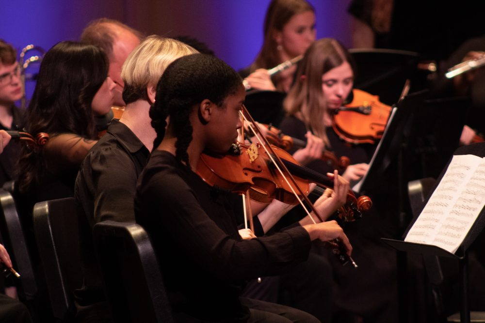
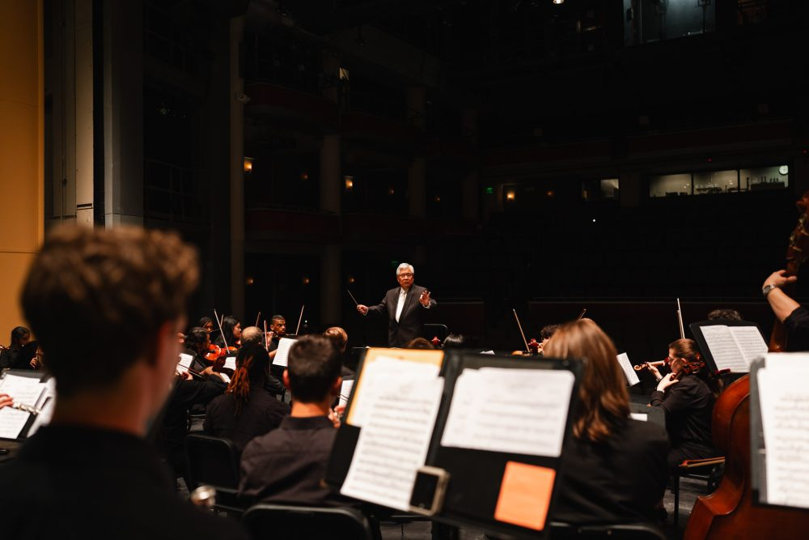

Fall 2025: Orchestra performing Beethoven Symphony No. 5

The venues/facilities of the concert venues

Dr. Alan Yamamoto in action during a performance

Close-up of a performer playing the violin

A performer's view of the conductor and audience